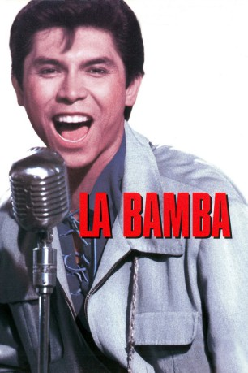

#10793 La Bamba
 
 IMDB-Wertung: 6.9 / 10
IMDB-Wertung: 6.9 / 10  Tomatometer: 96
Tomatometer: 96  Metascore: 65
Metascore: 65 
Amerika, Ende der Fünfziger. Rosarote Straßenkreuzer, bonbonfarbige Petticoats, Pferdeschwänze, spitze Schuhe und eine Musik, die die Jugend der Welt in Atem hält: Rock'n'Roll. Nahezu alles scheint möglich in dieser Zeit. In nur 8 Monaten schafft der Obstpflücker Richie Valens den Aufstieg zum absoluten Superstar des Rock'n'Roll. In den Charts landet er einen Hit nach dem anderen. Am 3. Februar 1959 stirbt Richie Valens, gerade 17 Jahre alt, bei einem Flugzeugabsturz.
Jahr: 1987
Dauer: 104 Minuten
FSK: 6
Land: USA Studio: Columbia Pictures CorporationTonspuren: DD2.0 - ,
Untertitel:
Auflösung: 720p (1280x718) Größe: 3563 MB
Genre: Drama, Musik, Biographie
Regisseur: Luis Valdez
Drehbuch: Luis Valdez
Soundtrack: Miles Goodman, Carlos Santana
Darsteller:
 Lou Diamond Phillips als Ritchie Valens
Lou Diamond Phillips als Ritchie Valens Esai Morales als Bob Morales
Esai Morales als Bob Morales- Rosanna DeSoto als Connie Valenzuela
 Elizabeth Peña als Rosie Morales
Elizabeth Peña als Rosie Morales- Danielle von Zerneck als Donna Ludwig
 Joe Pantoliano als Bob Keane
Joe Pantoliano als Bob Keane- Rick Dees als Ted Quillin
- Brian Setzer als Eddie Cochran
 Mike Moroff als Mexican Ed
Mike Moroff als Mexican Ed- Geoffrey Rivas als Rudy
 Sam Anderson als Mr. Ludwig
Sam Anderson als Mr. Ludwig- Jeffrey Alan Chandler als Alan Freed
 Stephen Lee als Big Bopper
Stephen Lee als Big Bopper John Quade als Bartender
John Quade als Bartender Noble Willingham als Howard
Noble Willingham als Howard- Rosanna Locke als Sharon Sheeley
- Dyana Ortelli als Rosalinda
 Tony Genaro als Mr. Caballero
Tony Genaro als Mr. Caballero- Francisco Aragon als Student (uncredited)
- Linda Holdahl als Featured Dancer (uncredited)
- Dominic Lucero als Dancer (uncredited)
 Thomas Rosales Jr. als Man at Party (uncredited)
Thomas Rosales Jr. als Man at Party (uncredited)- Matthew Shields als Dancer (uncredited)
- Marshall Crenshaw als Buddy Holly
- Howard Huntsberry als Jackie Wilson
- Daniel Valdez als Lelo
- Felipe Cantu als Curandero
- Eddie Frias als Chino
- Maggie Gwinn als Mrs. Ludwig
- Lettie Ibarra als Vera
- Diane Rodriguez als Ernestine
- Katie Valdez als Connie Jr.
- Gloria Balcorta als Irma
- Ernesto Hernández als Garbage Man
- Thom Pintello als Sound Engineer
- Stephen F. Schmidt als Tommy Allsup
- Kim Sebastian als Donna's Girlfriend
- Andy Griggs als Mr. House
- Art K. Koustik als Trucker
- Allison Robinson als Girl at Party
- Hunter Payne als Baseball Announcer
- Joe Miller als Student
- Mary Ann Tanedo als Student
- Barb Jittner als Student
- Brian Russell als Student
- Yolanda Martinez Olivarri als Tall Blond Girl on Motorcycle
- Rooney Paris als Fan (uncredited)
- Reynaldo Silva als Student / Party Animal (uncredited)
- Connie Valenzuela als Elderly Lady at Party (uncredited)
Datei: X:\1987\La Bamba (1987, FSK6, 1280x718).mkv seit 08.03.2019
Festplatte: HD 1987-1991
 Es gibt insgesamt 50 Filme in der Gruppe '1987'
Es gibt insgesamt 50 Filme in der Gruppe '1987'